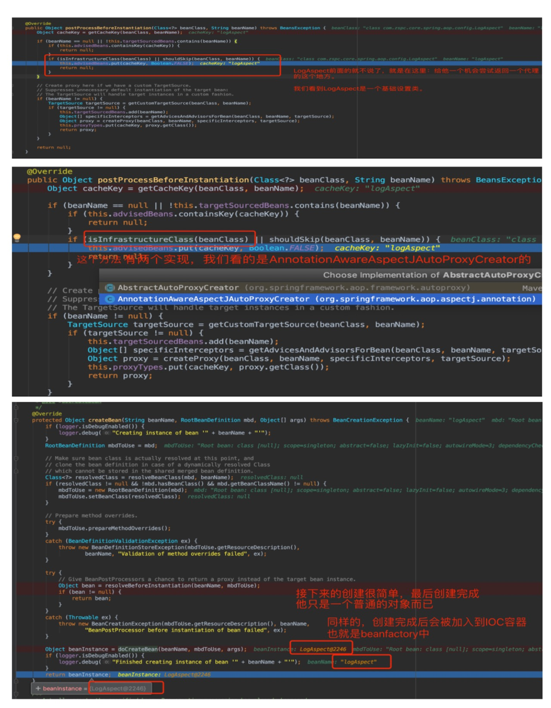
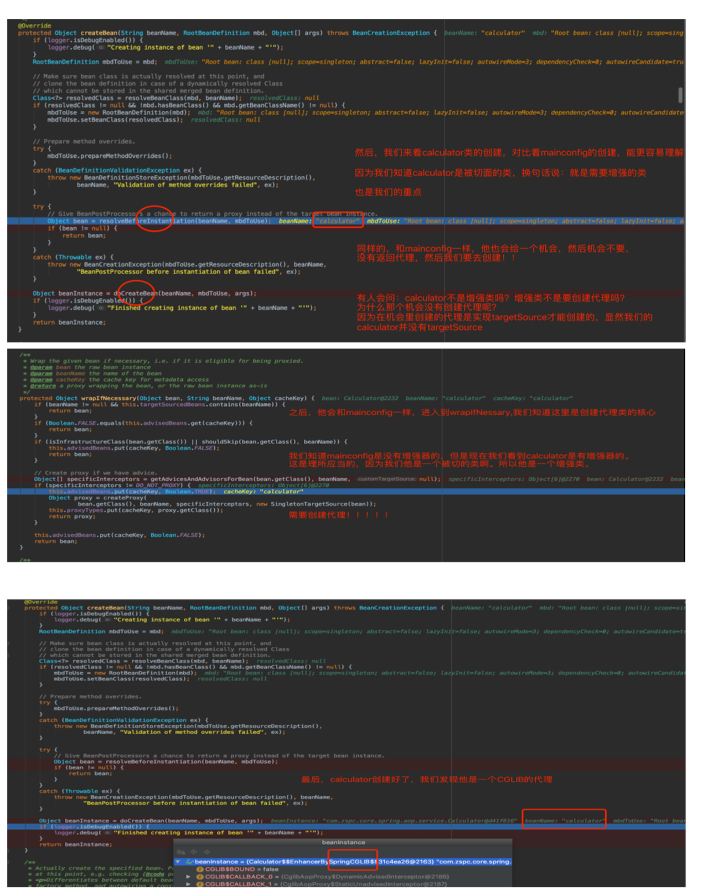
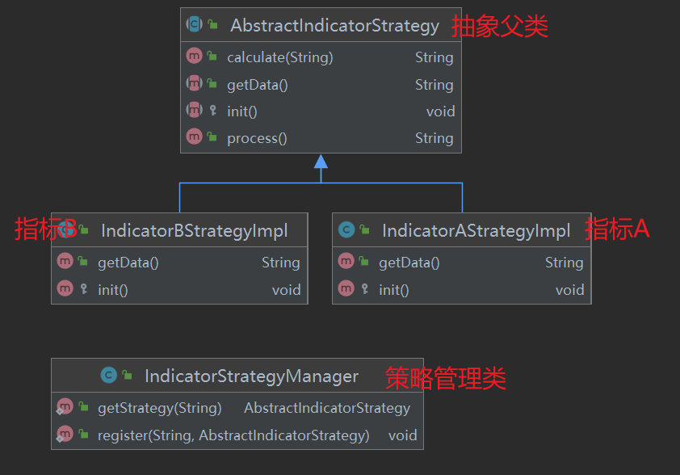
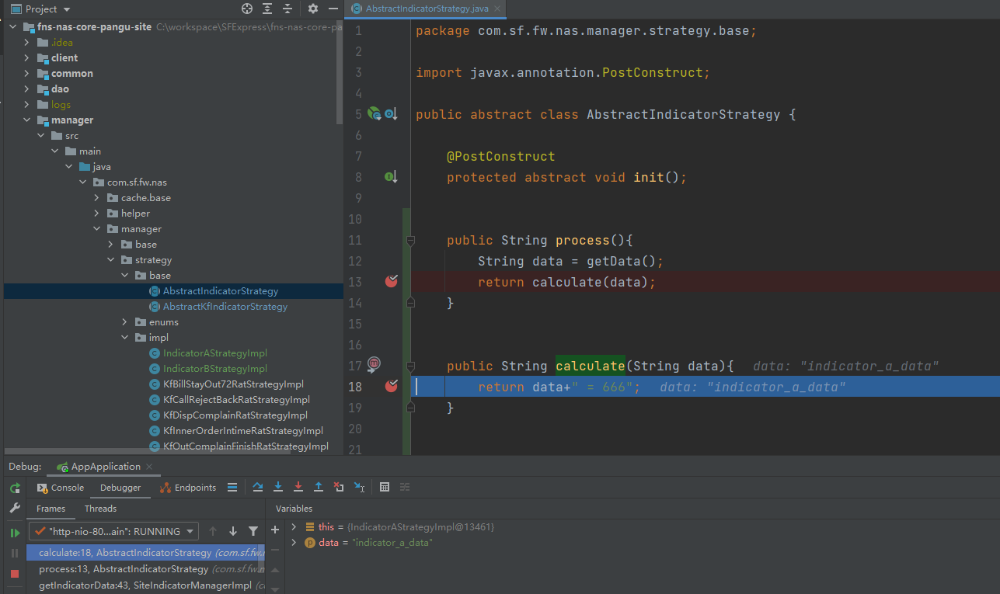
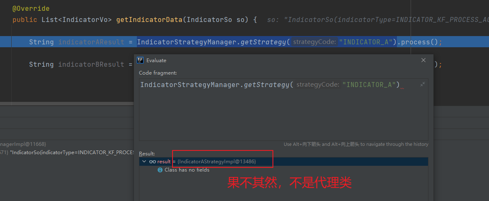
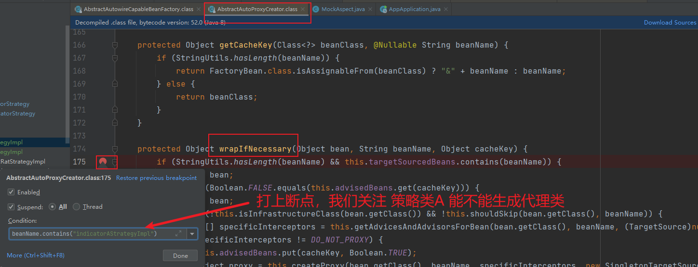
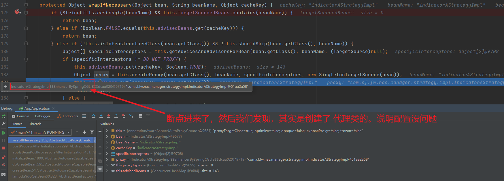
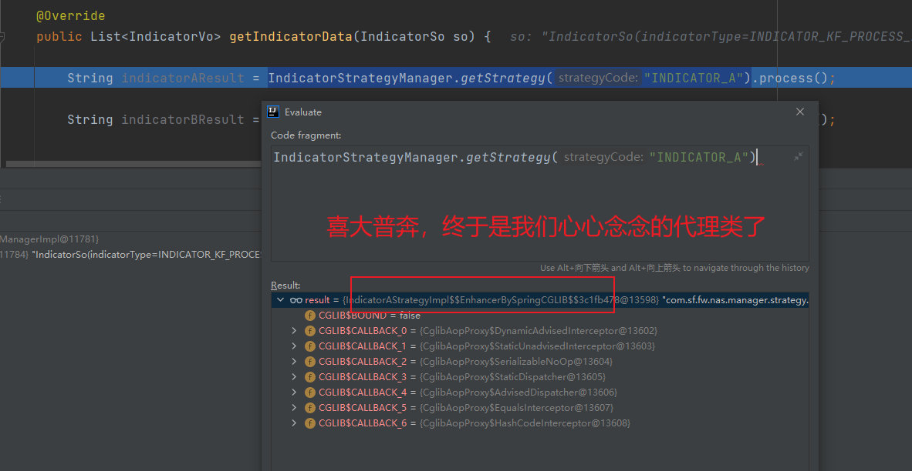
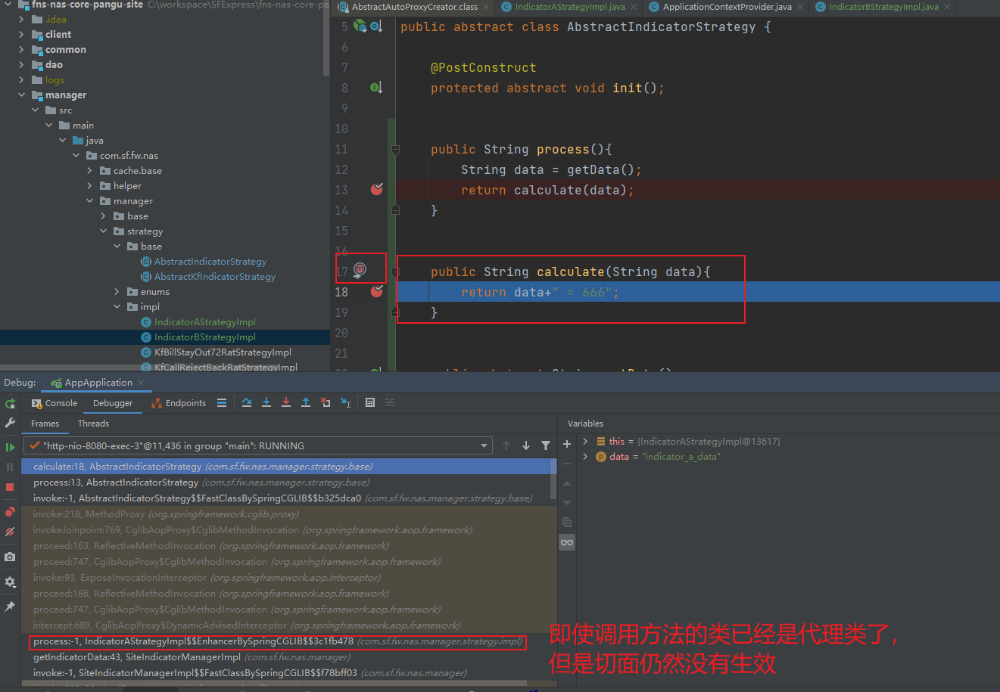
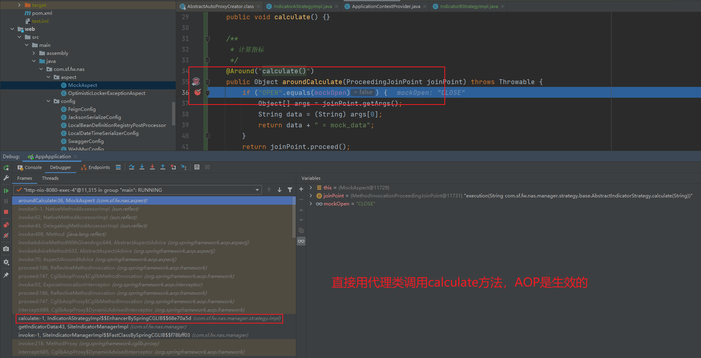

spring注解AOP开发和源码解读及实践
spring注解AOP开发和源码解读及实践
本文主要介绍spring的aop，基于注解和XML的简单使用和源码解读, 本文涉及的所有图片，如果不清晰，可以下载PDF文件进行查看：
AOP的使用
在了解使用之前，我们需要先了解一下：execution表达式
execution表达式
// 任意公共方法的执行：
execution(public * *(..))
//任何一个以“set”开始的方法的执行：
execution(* set*(..))
//AccountService 接口的任意方法的执行：
execution(* com.xyz.service.AccountService.*(..))
//定义在service包里的任意方法的执行：
execution(* com.xyz.service.*.*(..))
//定义在service包和所有子包里的任意类的任意方法的执行：
execution(* com.xyz.service..*.*(..))
//定义在pointcutexp包和所有子包里的JoinPointObjP2类的任意方法的执行：
execution(* com.test.spring.aop.pointcutexp..JoinPointObjP2.*(..)))
基于注解的使用
目前最火的使用方式就是基于注解的使用方式，避免了大量的配置文件，而且易于管理和维护。简单明了，推荐使用。
导入aop所必须的最小maven依赖
1.spring的aop依赖于spring的ioc容器，所以需要导入spring-context,同时spirng-context中已经引入了spring-aop，所以就不需要单独的引入spring-aop了。
2.spring的aop依赖于强大的AspectJ，所以需要引入aspectjweaver的依赖，但是spring-aspects已经加入了这个依赖，所以，只需要再引入spring-aspects就可以了。
3.关于为什么只引入这两个依赖，请移步：spring-aop和aspectJ的关系
4.最后，我们自己会编写了一些测试方法，所以需要引入Junit的依赖。
<dependencies>
<dependency>
<groupId>org.springframework</groupId>
<artifactId>spring-context</artifactId>
<version>4.3.12.RELEASE</version>
</dependency>
<dependency>
<groupId>org.springframework</groupId>
<artifactId>spring-aspects</artifactId>
<version>4.3.12.RELEASE</version>
</dependency>
<dependency>
<groupId>junit</groupId>
<artifactId>junit</artifactId>
<version>4.12</version>
<scope>test</scope>
</dependency>
</dependencies>实现业务逻辑类
在这个实例中，具体的业务逻辑类是： com.zspc.core.spring.aop.service.Calculator
我们想要的目的是：在业务逻辑运行的时候将日志进行打印（方法之前、方法运行结束、方法出现异常，等等等）
public class Calculator {
/**
* 计算两个数的除法
*/
public int div(int a, int b){
System.out.println("开始计算-->除数:"+a+",被除数:"+b+".");
return a/b;
}
}实现具体的日志切面类
之前说到，我们的目的是：在业务逻辑类运行的时候将日志进行打印（方法之前、方法运行结束、方法出现异常，等等等）
所以我们需要一个切面类，切面类里面的方法需要动态感知Calculator.div(int,int)方法运行到哪里然后执行通知方法；
环绕通知：目标方法运行前后都运行，需要手动运行joinPoint.proceed()，才能推进目标方法的执行，对应切面类中的logAround()
前置通知：目标方法运行之前运行，对应切面类中的logStart()
后置通知：目标方法运行之后，结束之前（无论方法正常结束(return)还是异常结束(exception)）运行，对应切面类中的logAfter()
返回通知：目标方法返回之后运行，对应切面类中logReturn()
异常通知：目标方法发生异常的时候运行，该异常运行后，返回通知不会运行，对应切面类中的logException()
执行流程：环绕通知开始–>前置通知–>环绕通知joinPoint.proceed()–>环绕通知结束–>后置通知–>返回通知/异常通知
public class LogAspect {
public void logStart(JoinPoint joinPoint) {
//...
}
public void logEnd(JoinPoint joinPoint) {
//...
}
public void logReturn(JoinPoint joinPoint, Object result) {
//...
}
public void logException(JoinPoint joinPoint, Exception exception) {
//...
}
public Object logAround(ProceedingJoinPoint joinPoint){
//...
}
}对切面类的方法添加注解，标注执行时机
对切面类添加注解,并指定切面
@Around
@Before
@After
@AfterReturning
@AfterThrowing
指定切面有两种方法
定义一个公共的切面方法，@Pointcut(“execution (xxxxx)”)，并在切面类注解中引入
直接在切面类注解中指定切面：@Before(“com.xxx.xxx.xxx()”)
public class LogAspect {
//抽取公共的切入点表达式
@Pointcut("execution(* com.zspc.core.spring.aop.service.Calculator.*(..))")
public void pointCut() {}
@Before("pointCut()")
public void logStart(JoinPoint joinPoint) {
//...
}
@After("pointCut()")
public void logEnd(JoinPoint joinPoint) {
//...
}
@AfterReturning(value = "pointCut()", returning = "result")
public void logReturn(JoinPoint joinPoint, Object result) {
//....
}
@AfterThrowing(value = "pointCut()", throwing = "exception")
public void logException(JoinPoint joinPoint, Exception exception) {
//...
}
@Around(value = "pointCut()")
public Object logAround(ProceedingJoinPoint joinPoint){
//...
}
}
告诉spring哪个类是切面类
- 就是给切面类加上 @Aspect 注解，让spirng容器知道这是一个切面类。
@Aspect
public class LogAspect {
//....省略...
}
将切面类和业务逻辑类纳入spirng管理
- 就是在配置类中添加@Bean
@Configuration
public class MainConfig {
@Bean
public LogAspect logAspect() {
return new LogAspect();
}
@Bean
public Calculator calculator() {
return new Calculator();
}
}
开启基于注解的aop模式
- 给配置类添加@EnableAspectJAutoProxy,，这样spring才能识别所有的aop注解。
@Configuration
@EnableAspectJAutoProxy
public class MainConfig {
@Bean
public LogAspect logAspect() {
return new LogAspect();
}
@Bean
public Calculator calculator() {
return new Calculator();
}
}最后一步，编写测试类，进行测试
- 测试类
public class AOPTest {
@Test
public void testAop() {
ApplicationContext applicationContext = new AnnotationConfigApplicationContext(MainConfig.class);
Calculator calculator = (Calculator) applicationContext.getBean("calculator");
int div = calculator.div(2, 1);
System.out.println(div);
}
}- 测试结果
环绕通知开始
前置通知运行。。。参数列表是：{[12, 5]}
开始计算-->除数:12,被除数:5.
环绕通知结束
后置通知运行。。。@After
返回通知运行。。。@AfterReturning:运行结果：{2}
2基于XML的使用
略
这个就不说了，和上面差不多
<?xml version="1.0" encoding="UTF-8"?>
<beans xmlns="http://www.springframework.org/schema/beans"
xmlns:xsi="http://www.w3.org/2001/XMLSchema-instance"
xmlns:aop="http://www.springframework.org/schema/aop"
xsi:schemaLocation="http://www.springframework.org/schema/beans
http://www.springframework.org/schema/beans/spring-beans.xsd
http://www.springframework.org/schema/aop
http://www.springframework.org/schema/aop/spring-aop.xsd">
<bean id="logAspect" class="com.zspc.core.spring.aop.config.LogAspect"/>
<bean id="calculator" class="com.zspc.core.spring.aop.service.Calculator"/>
<aop:config>
<aop:aspect ref="logAspect">
<aop:pointcut expression="execution (* com.zspc.core.spring.aop.service.Calculator.*(..))" id="pointCut"/>
<aop:before pointcut-ref="pointCut" method="logStart"/>
<aop:after-returning pointcut-ref="pointCut" method="logReturn"/>
<aop:after-throwing pointcut-ref="pointCut" method="logException"/>
<!--<aop:after pointcut-ref="pointCut" method="doAfter"/>-->
<!--<aop:around pointcut-ref="pointCut" method="doAround"/>-->
</aop:aspect>
</aop:config>
</beans>AOP的源码流程分析
对于任何的源码分析，都做到三步分析，就可以非常明确了：
看给容器中注入了什么组件
这个组件什么时候工作
这个组件的功能是什么
从 @EnableAspectJAutoProxy 开始
@EnableAspectJAutoProxy 是什么，干啥用的
结论先行：@EnableAspectJAutoProxy的作用就是为了给我们的容器中注入一个：AnnotationAwareAspectJAutoProxyCreator
先看看这个注解类EnableAspectJAutoProxy.java的源码:
package org.springframework.context.annotation;
import java.lang.annotation.Documented;
import java.lang.annotation.ElementType;
import java.lang.annotation.Retention;
import java.lang.annotation.RetentionPolicy;
import java.lang.annotation.Target;
@Target({ElementType.TYPE})
@Retention(RetentionPolicy.RUNTIME)
@Documented
@Import({AspectJAutoProxyRegistrar.class})
public @interface EnableAspectJAutoProxy {
boolean proxyTargetClass() default false;
boolean exposeProxy() default false;
}
EnableAspectJAutoProxy.java类上有一个注解：@Import({AspectJAutoProxyRegistrar.class})：@Import这个注解给容器中导入了一个组件AspectJAutoProxyRegistrar
AspectJAutoProxyRegistrar这个组件是干嘛呢？ 我们点进去看他的继承关系，源码如下：```java
package org.springframework.context.annotation;import org.springframework.aop.config.AopConfigUtils;
import org.springframework.beans.factory.support.BeanDefinitionRegistry;
import org.springframework.core.annotation.AnnotationAttributes;
import org.springframework.core.type.AnnotationMetadata;class AspectJAutoProxyRegistrar implements ImportBeanDefinitionRegistrar {
AspectJAutoProxyRegistrar() {
}
public void registerBeanDefinitions(AnnotationMetadata importingClassMetadata, BeanDefinitionRegistry registry) {
AopConfigUtils.registerAspectJAnnotationAutoProxyCreatorIfNecessary(registry);
AnnotationAttributes enableAspectJAutoProxy = AnnotationConfigUtils.attributesFor(importingClassMetadata, EnableAspectJAutoProxy.class);
if (enableAspectJAutoProxy != null) {
if (enableAspectJAutoProxy.getBoolean(“proxyTargetClass”)) {
AopConfigUtils.forceAutoProxyCreatorToUseClassProxying(registry);
}
if (enableAspectJAutoProxy.getBoolean(“exposeProxy”)) {
AopConfigUtils.forceAutoProxyCreatorToExposeProxy(registry);
}
}
}
}- `class AspectJAutoProxyRegistrar implements ImportBeanDefinitionRegistrar ` 这个类继承自 `ImportBeanDefinitionRegistrar` - 我们发现他是一个 `ImportBeanDefinitionRegistrar `，通过之前的学习，我们知道`ImportBeanDefinitionRegistrar`的作用是： - 使用`@Import`的时候，可以指定`ImportBeanDefinationRegitrar.` - 自定义一个类实现`ImportBeanDefinationRegistrar`接口,并实现`resisterBeanDefinatons`方法，在这个方法里面，可以指定需要注册的组件。 - 使用`ImportBeanDefinationRegistrar`,可以指定bean名，以及作用域之类的，比之前两种方式拥有更多的定制性 - 关于这些作用，看不懂，没关系，可以参考： - 所以，我们要看看`AspectJAutoProxyRegistrar`这个到底给我们容器中注入了什么东西？ - `AopConfigUtils.registerAspectJAnnotationAutoProxyCreatorIfNecessary(registry);` 通过这行代码，我们看到他给我们注册了一个`AspectJAnnotationAutoProxyCreator`如果需要的话。 - 一直点进去这个方法，最后会看到给我们的容器中注入了一个bean： - 注入的bean的名字叫做：`org.springframework.aop.config.internalAutoProxyCreator` - 注入的bena的实际对象是：`org.springframework.aop.aspectj.annotation.AnnotationAwareAspectJAutoProxyCreator` 简单的说就是：EnableAspectJAutoProxy 使用了 @Import，@Import导入了一个AspectJAutoProxyRegistrar ，这个Register继承自ImportBeanDefinitionRegister，并实现了registerBeanDifinitions方法，向容器中注册了一个：AnnotationAwareAspectJAutoProxyCreator 总结：`@EnableAspectJAutoProxy`的作用就是为了给我们的容器中注入一个：`AnnotationAwareAspectJAutoProxyCreator` 以下是示意图（图中也有步骤说明） <img src="【spring】spring注解AOP开发和源码解读及实践.assets/image-20221222170945180.png" alt="image-20221222170945180" style="zoom: 33%;" /> ### AnnotationAwareAspectJAutoProxyCreator 是什么？干啥用的？ - 我们看看这个类`AnnotationAwareAspectJAutoProxyCreator.java`的继承关系： - class AnnotationAwareAspectJAutoProxyCreator extends AspectJAwareAdvisorAutoProxyCreator - class AspectJAwareAdvisorAutoProxyCreator extends AbstractAdvisorAutoProxyCreator - class AbstractAdvisorAutoProxyCreator extends AbstractAutoProxyCreator - class AbstractAutoProxyCreator extends ProxyProcessorSupport implements SmartInstantiationAwareBeanPostProcessor, BeanFactoryAware - 到这里就到底了，我们发现了两个重要的接口： - `SmartInstantiationAwareBeanPostProcessor`：是一个后置处理器xxxxBeanPostProcessor，我们知道在spirng中，后置处理器是一个非常重要的概念，他会在bean的初始化前后做一些工作。所以，我们要看这个`SmartInstantiationAwareBeanPostProcessor`到底做了什么，实现了我们的aop的强大功能 - `BeanFactoryAware`：实现了这个接口的bean，可以直接访问 Spring 容器，该bean被容器创建以后，它会拥有一个指向 Spring 容器（也就是BeanFactory）的引用，可以利用该bean根据传入参数动态获取被spring工厂加载的其他的所有的bean。 eg：这部分是IOC的内容，我们不扯那么多 <img src="【spring】spring注解AOP开发和源码解读及实践.assets/znInKzNU3RP5vLmcaq7ij3QsxgXDADDfgxV76ZhS-58.png" alt="znInKzNU3RP5vLmcaq7ij3QsxgXDADDfgxV76ZhS-58" style="zoom: 25%;" /> - AnnotationAwareAspectJAutoProxyCreator 作为 xxxBeanPostProcessor 做了什么工作 - AnnotationAwareAspectJAutoProxyCreator 作为 BeanFactoryAware 做了什么工作 - 在分析上面两个问题之前，我们先来看看AnnotationAwareAspectJAutoProxyCreator是什么时候被创建的。 - 在之前，我们知道@EnableAspectJAutoProxy的给我们的容器中注入一个：AnnotationAwareAspectJAutoProxyCreator - 同时，我们知道AnnotationAwareAspectJAutoProxyCreator的作用主要是作为一个后置处理器，在bean的创建前后做一些工作，以及实现了BeanFactoryAware接口，可以直接与spring容器进行操作。 - 那么，AnnotationAwareAspectJAutoProxyCreator是什么时候被创建的呢？ ### AnnotationAwareAspectJAutoProxyCreator 是什么时候被创建的 - 从程序的入口开始看，这里的入口是指我们的测试类，也就是下面这段代码 ```java public class AOPTest { @Test public void testAop() { ApplicationContext applicationContext = new AnnotationConfigApplicationContext(MainConfig.class); Calculator calculator = (Calculator) applicationContext.getBean("calculator"); int div = calculator.div(2, 1); System.out.println(div); } }
new AnnotationConfigApplicationContext(MainConfig.class)： 传入配置类，创建Spring容器
点击进去构造方法，在创建容器的时候，有一个非常重要的方法叫做：refresh();
refresh()方式是整个IOC容器创建的关键，对于他的解释，看下面的说明，关于refresh()方法，在本文中不是重点，可以略过…
@Override
public void refresh() throws BeansException, IllegalStateException {
// 来个锁，不然 refresh() 还没结束，你又来个启动或销毁容器的操作，那不就乱套了嘛
synchronized (this.startupShutdownMonitor) {
// 准备工作，记录下容器的启动时间、标记“已启动”状态、处理配置文件中的占位符
prepareRefresh();
// 这步比较关键，这步完成后，配置文件就会解析成一个个 Bean 定义，注册到 BeanFactory 中，
// 当然，这里说的 Bean 还没有初始化，只是配置信息都提取出来了，
// 注册也只是将这些信息都保存到了注册中心(说到底核心是一个 beanName-> beanDefinition 的 map)
ConfigurableListableBeanFactory beanFactory = obtainFreshBeanFactory();
// 设置 BeanFactory 的类加载器，添加几个 BeanPostProcessor，手动注册几个特殊的 bean
// 这块待会会展开说
prepareBeanFactory(beanFactory);
try {
// 【这里需要知道 BeanFactoryPostProcessor 这个知识点，Bean 如果实现了此接口，
// 那么在容器初始化以后，Spring 会负责调用里面的 postProcessBeanFactory 方法。】
// 这里是提供给子类的扩展点，到这里的时候，所有的 Bean 都加载、注册完成了，但是都还没有初始化
// 具体的子类可以在这步的时候添加一些特殊的 BeanFactoryPostProcessor 的实现类或做点什么事
postProcessBeanFactory(beanFactory);
// 调用 BeanFactoryPostProcessor 各个实现类的 postProcessBeanFactory(factory) 方法
invokeBeanFactoryPostProcessors(beanFactory);
// 注册 BeanPostProcessor 的实现类，注意看和 BeanFactoryPostProcessor 的区别
// 此接口两个方法: postProcessBeforeInitialization 和 postProcessAfterInitialization
// 两个方法分别在 Bean 初始化之前和初始化之后得到执行。注意，到这里 Bean 还没初始化
registerBeanPostProcessors(beanFactory);
// 初始化当前 ApplicationContext 的 MessageSource，国际化这里就不展开说了，不然没完没了了
initMessageSource();
// 初始化当前 ApplicationContext 的事件广播器，这里也不展开了
initApplicationEventMulticaster();
// 从方法名就可以知道，典型的模板方法(钩子方法)，
// 具体的子类可以在这里初始化一些特殊的 Bean（在初始化 singleton beans 之前）
onRefresh();
// 注册事件监听器，监听器需要实现 ApplicationListener 接口。这也不是我们的重点，过
registerListeners();
// 重点，重点，重点
// 初始化所有的 singleton beans
//（lazy-init 的除外）
finishBeanFactoryInitialization(beanFactory);
// 最后，广播事件，ApplicationContext 初始化完成
finishRefresh();
}
catch (BeansException ex) {
if (logger.isWarnEnabled()) {
logger.warn("Exception encountered during context initialization - " +
"cancelling refresh attempt: " + ex);
}
// Destroy already created singletons to avoid dangling resources.
// 销毁已经初始化的 singleton 的 Beans，以免有些 bean 会一直占用资源
destroyBeans();
// Reset 'active' flag.
cancelRefresh(ex);
// 把异常往外抛
throw ex;
}
finally {
// Reset common introspection caches in Spring's core, since we
// might not ever need metadata for singleton beans anymore...
resetCommonCaches();
}
}
}在refresh()方法中，调用了registerBeanPostProcessors(beanFactory);用来注册xxxBeanPostProcessor后置处理器。
正如我们的标题：AnnotationAwareAspectJAutoProxyCreator类，他其实就是一个继承了SmartInstantiationAwareBeanPostProcessor的一个后置处理器。
所以这个方法里面，其实就创建了我们的AnnotationAwareAspectJAutoProxyCreator类。
作者注：registerBeanPostProcessors(beanFactory)是用来注册xxxBeanPostProcessor的，但是我们的AnnotationAwareAspectJAutoProxyCreator不是以BeanPostProcessor结尾的，能创建它吗？
作者注：当然是能的，在这里，一开始没转过弯，我们要知道我们的AnnotationAwareAspectJAutoProxyCreator虽然不是BeanPostProcessor结尾的，但是他可是继承了xxxBeanPostProcessor的，所以他也是一个BeanPostProcessor。
知道了registerBeanPostProcessors(beanFactory)是用来注册xxxBeanPostProcessor，所以我们知道我们的AnnotationAwareAspectJAutoProxyCreator类也是在这里创建的，那么我们进去看看。
首先获取所有等待注册的xxxBeanPostProcessor的定义，注意这里只是定义！并不是真正的bean。：String[] postProcessorNames = beanFactory.getBeanNamesForType(BeanPostProcessor.class, true, false);
怎么理解这里所说的“定义”呢？
就相当于我出门买东西，要买牙刷，牙膏，洗衣液，衣架. 我列了一个清单。
这个清单，是所有要买的东西的定义，但是它不是真正的东西！
下一步，对所有的xxxBeanPostProcessor进行归类，并且按类分别生成Bean,这里就是生成真正的Bean了。
归类，共分为三类：继承了PriorityOrdered的为一类，继承了Ordered的为一类，剩下的为一类。
然后对这三类，分别进行注册。
优先注册实现了PriorityOrdered接口的BeanPostProcessor；
再给容器中注册实现了Ordered接口的BeanPostProcessor；
最后注册没实现优先级接口的BeanPostProcessor；
所谓的注册，实际上就是创建BeanPostProcessor的具体Bean实例，放在容器里。
现在，我们知道了，所谓的注册，实际上就是创建BeanPostProcessor的具体Bean实例，并且我们知道了在哪里注册我们的BeanPostProcessor。下面我们具体看看怎么注册的。
在看怎么注册的之前，明确一点：在spring启动的时候，会注册很多xxxBeanPostProcessor，我们现在先不需要关注其他的，我们关注的是
bean 的定义为：InternalAutoProxyCreator
创建的bean实例为：AnnonationAwareAspectJAutoProxyCreator
主要是关注这个，其他的我们先不看
之前我们说了，在refresh()方法中，会注册BeanPostProcessor，而且是按照分类进行注册的。
下面这个图，是上面这部分逻辑的图示（图中有说明）
- 我们的关注点：AnnontationAwareAspectJAutpProxyCreator是实现了了Ordered接口的，所以我们关注怎么注册实现了Ordered的接口的BeanPostProcessor
- 主要是在源码：BeanPostProcessor pp = beanFactory.getBean(ppName, BeanPostProcessor.class); 这一行，通过我们的bean定义和要获取的bean实例类型–>来获取我们的bean实例
// Next, register the BeanPostProcessors that implement Ordered.
List<BeanPostProcessor> orderedPostProcessors = new ArrayList<BeanPostProcessor>();
for (String ppName : orderedPostProcessorNames) {
BeanPostProcessor pp = beanFactory.getBean(ppName, BeanPostProcessor.class);
orderedPostProcessors.add(pp);
if (pp instanceof MergedBeanDefinitionPostProcessor) {
internalPostProcessors.add(pp);
}
}- getBean() –调用了–> doGetBean()，doGetBean的主要逻辑如下
protected <T> T doGetBean(final String name, final Class<T> requiredType, final Object[] args, boolean typeCheckOnly) throws BeansException {
// 尝试从缓存中获取我们的目标Bean对象
Object sharedInstance = getSingleton(beanName);
if (sharedInstance != null && args == null) {
//获取到了，直接拿到目标bean对象
bean = getObjectForBeanInstance(sharedInstance, name, beanName, null);
}else {
// 缓存中获取不到，那么就去生成
// 生成之前会做一些检查
// Create bean instance. 开始生成目标bean
if (mbd.isSingleton()) {
//目标类是单例
sharedInstance = getSingleton(beanName, new ObjectFactory<Object>() {
@Override
public Object getObject() throws BeansException {
try {
return createBean(beanName, mbd, args);
}catch (BeansException ex) {
//异常
}
}
});
bean = getObjectForBeanInstance(sharedInstance, name, beanName, mbd);
}else if (mbd.isPrototype()) {
//目标类是多例--省略了
bean = getObjectForBeanInstance(prototypeInstance, name, beanName, mbd);
}else {
//其他
}
}
}
// 检查并返回--省略了
return (T) bean;
}我们是第一次运行，缓存中肯定没有，所以肯定会去生成createBean()，我们进去createBean()看一下，createBean里面 –调用了–> doCreateBean()
创建bean实例，都是在 doCreateBean() 中完成的，doCreateBean()主要完成了下面几个工作
创建bean实例，但是没有任何属性： instanceWrapper = createBeanInstance(beanName, mbd, args);
对bean进行属性复制：populateBean(beanName, mbd, instanceWrapper);
初始化bean：exposedObject = initializeBean(beanName, exposedObject, mbd); 这个初始化，才是重点中的重点
返回初始化之后的bean，就是真真正正的bean了，也就是我们苦思冥想的：AnnotationAwareAspectJAutoProxyCreator的实例。
初始化bean：exposedObject = initializeBean(beanName, exposedObject, mbd); 这个初始化，才是重点中的重点
我们来单独看看这部分重点内容，初始化bean里面会在bean的初始化之前和之后分别执行BeanPostProcessor
处理Aware接口的方法回调：invokeAwareMethods(beanName, bean);
只有实现了Aware接口的bean才会调用
这里主要是做了一步：就是把BeanFactory交给当前的bean，换句话说：就是当前bean里面保存了一个对beanFactory的一个引用。
应用后置处理器的postProcessBeforeInitialization（）：wrappedBean = applyBeanPostProcessorsBeforeInitialization(wrappedBean, beanName);
执行自定义的初始化方法：invokeInitMethods(beanName, wrappedBean, mbd);
这里所说的自定义的初始化方法，是我们自己配置的 init 方法，会在这里执行
- 什么是自己配置的init方法，就是下面这种，指定的 initMethod
@Bean(initMethod=””,destoryMethod=””)
<bean id=””, class=””, init-method=””, destory-method=””>
执行后置处理器的postProcessAfterInitialization（）：wrappedBean = applyBeanPostProcessorsAfterInitialization(wrappedBean, beanName);
返回wrappedBean，就是我们的目标结果了。
最后创建完之后，会将我们的BeanPostProcessor放在BeanFoctory中。beanFactory.addBeanPostProcessor(new ApplicationListenerDetector(applicationContext))
- 作者注：BeanPostProcessor也是一个Bean，既然是Bean，就要满足Bean的生成步骤，每一个Bean的生成都会判断是否有对应的BeanPostProcessor需要执行！这也是为什么我们的 AnnotationAwareAspectJAutoProxyCreator明明是一个BeanPostProcessor，为什么还要执行applyBeanPostProcessorsBeforeInitialization和applyBeanPostProcessorsAfterInitialization
总结：至此，我们本小节的标题：AnnotationAwareAspectJAutoProxyCreator 是什么时候被创建的呢？就已经完成了。我们总体回顾一下
- 首先是，我们知道@EnableAspectJAutoProxy的给我们的容器中注入一个：AnnotationAwareAspectJAutoProxyCreator
- 同时，我们知道AnnotationAwareAspectJAutoProxyCreator的作用主要是作为一个后置处理器，在bean的创建前后做一些工作，以及实现了BeanFactoryAware接口，可以直接与spring容器进行操作。
- 那么，我们现在又知道了AnnotationAwareAspectJAutoProxyCreator的是什么时候被创建的，怎么被创建的，以及创建完之后是加入到了BeanFacory中。
下面，我们就要看看，这个 AnnotationAwareAspectJAutoProxyCreator 是怎么具体影响我们的业务的，是怎么把aop功能添加进来的。
在看这个问题之前，我们要先看一下，我们具体的业务类是怎么创建的。包括：MainConfig, LogAspect, Calculator这三个类
MainConfig是一个配置类
LogAspect是一个切面类
Calculator是一个普通类
具体的业务类(MainConfig, LogAspect, Calculator)是怎么创建的
首先我们明确一点，在spirng中，所有bean的生成走的代码都是同一个，只不过根据接口的不同，走的逻辑不同
对于这三个类bean的生成，因为三个类所代表的含义都是不同的，所以他们分别生成的逻辑是不同的。
在区分这三个类的生成逻辑之前，我们总体看一下，bean的通用生成规则：
对于一个Bean来说，不管这个Bean是BeanPostProcessor，还是config类，还是切面类，或者是普通类，在spirng中，都是通过getBean()作为统一入口
比如对于前面说的BeanPostProcessor，他的创建入口在：
- 开始：refresh()
- 紧接着：registerBeanPostProcessors(beanFactory);
- 紧接着：registerBeanPostProcessors(beanFactory, this);
- 这一行调用了getBean()：BeanPostProcessor pp = beanFactory.getBean(ppName, BeanPostProcessor.class);
比如我们的普通Bean 的创建
- 开始：refresh()
- 紧接着：finishBeanFactoryInitialization(beanFactory);
- 紧接着：beanFactory.preInstantiateSingletons();
- 最后调用了 getBean()：getBean(beanName);
所以，我们从getBean开始，看一下spring是怎么创建Bean的，以及怎么兼容所有的bean类型的（BeanPostProcessor，Config，切面类等）
下面的代码是getBean的主要逻辑流程，我是把所有的逻辑汇总在了一起，实际的代码中，是涉及到多个类的多个方法，比较复杂。我们只看主逻辑。
//遍历所有的bean定义
for(String beanName : 所有的BeanName){
getBean(){
doGetBean(){
// 尝试从缓存中获取我们的目标Bean对象
Object sharedInstance = getSingleton(beanName);
if (sharedInstance != null && args == null) {
//获取到了，直接拿到目标bean对象
bean = getObjectForBeanInstance(sharedInstance, name, beanName, null);
}else {
// 缓存中获取不到，那么就去生成
// 生成之前会做一些检查
// Create bean instance. 开始生成目标bean
if (mbd.isSingleton()) {
//生成单例bean
createBean(){
// Give BeanPostProcessors a chance to return a proxy instead of the target bean instance.
// 给 BeanPostProcessors 一个机会：返回代理类替代目标类(这里的代理类并不是说从缓存中取出代理类，而是用另一种方式生成代理类)
resolveBeforeInstantiation(){
1.applyBeanPostProcessorsBeforeInstantiation(){
for (BeanPostProcessor bp : getBeanPostProcessors()) {
if (bp instanceof InstantiationAwareBeanPostProcessor) {
postProcessBeforeInstantiation(){
//我们可以看到，这里也有创建代理的逻辑，以至于很多人会搞错。
//确实，这里是有可能创建代理的，但前提是对于相应的 bean 我们有自定义的 TargetSource 实现，
//进到 getCustomTargetSource(...) 方法就清楚了，我们需要配置一个 customTargetSourceCreators，它是一个 TargetSourceCreator 数组。
//这里就不再展开说 TargetSource 了
}
}
}
}
2.如果before返回的bean是个null，after不会执行
3.applyBeanPostProcessorsAfterInitialization(){
for (BeanPostProcessor bp : getBeanPostProcessors()) {
postProcessAfterInitialization
}
}
}
//开始创建Bean
doCreateBean(){
doCreateBean(){
//生成bean对象
createBeanInstance(beanName, mbd, args);
//给bean对象赋属性值
populateBean(beanName, mbd, instanceWrapper);
//初始化bean对象
initializeBean(){
//执行后置处理器
1.applyBeanPostProcessorsBeforeInitialization(){
postProcessBeforeInitialization
}
2.invokeInitMethods
3.applyBeanPostProcessorsAfterInitialization(){
postProcessAfterInitialization(){
wrapIfNecessary(){
//Create proxy if we have advice.
//如果有切面的话，就创建代理
//Object[] specificInterceptors = getAdvicesAndAdvisorsForBean(bean.getClass(), beanName, null);
createProxy(bean.getClass(), beanName, specificInterceptors, new SingletonTargetSource(bean));
}
}
}
}
}
}
}
bean = getObjectForBeanInstance(sharedInstance, name, beanName, mbd);
}else if (mbd.isPrototype()) {
//生成多例bean--省略了
bean = getObjectForBeanInstance(prototypeInstance, name, beanName, mbd);
}else {
//其他--省略
}
}
}
// 检查并返回--省略了
return (T) bean;
}
}
要想把上面那部分代码看懂，至少需要debug调试十几遍，反正我是不知道调试了几十遍，才看懂的。现在对上面的代码几个注意点说下：
applyBeanPostProcessorsBeforeInstantiation 和 applyBeanPostProcessorsBeforeInitialization 这是两个不一样的方法,一定不要看错，否则会很迷惑
- 一个结尾是：Instantiation（实例化）
- 一个结尾是：Initialization（初始）
下面我们就来看一下，我们关注的三个类的具体创建步骤，结合上面的代码流程，通过三个具体类的创建，来温故知新一下。
MainConfig
- 我们从refresh()–>finishBeanFactoryInitialization()–>preInstantiateSingletons()–>这些就不说了，我们从遍历Bean定义开始
LogAspect
Calculator
总结：通过以上的分析，我们收获了什么呢？
我们知道了BeanPostProcessor有两种，一种是在创建Bean之前给一个机会返回代理，一种是在创建bean之后进行一些操作。
前者是继承了SmartInstantiationAwareBeanPostProcessor的才有的功能。后者是所有的BeanPostProcessor都有的功能（包括SmartInstantiationAwareBeanPostProcessor）。
同时，我们知道了三个类的具体创建流程：mainConfig，LogAspect，Calculator的创建流程。
最后，我们仍然有一个疑问：
@EnableAspectJAutoProxy给我们的容器中注入一个：AnnotationAwareAspectJAutoProxyCreator
AnnotationAwareAspectJAutoProxyCreator是一个SmartInstantiationAwareBeanPostProcessor，我们目前只知道他是在bean创建之前给一个返回代理的机会。
但是同时我们知道，我们生成的所有这些类（仅限于当前这个demo里的所有类），貌似都没有把握这个机会，在bean创建之前生成了代理。
那么，这么AnnotationAwareAspectJAutoProxyCreator到底是有什么作用呢？？我还不知道！！！
除了上面那个问题，我们不知道之外，接下来，再来具体看看我们的代理对象，就是Calculator代理对象具体是怎么生成！
Calculator代理对象具体是怎么生成的？
话接上回，我们知道了spinrg的aop会对需要增强的bean的创建代理对象。在这里，被切的Calculator类就是一个增强的类，所以spirng会对他创建代理。
同样的，我们知道，spring在对切面增强类创建代理，是在wrapIfNessary()这个方法里面创建代理的。那么我们就来看看是什么创建的，切面方法是怎么注入进来的。
首先是获取当前bean可用的所有通知方法，Object[] specificInterceptors
找到候选的所有的增强器（找哪些通知方法是需要切入当前bean方法的）
获取到能在bean使用的增强器。
给增强器排序
这个获取当前类的所有通知方法的代码，就不看了，我们只需要知道运行完这个方法之后，就会拿到当前类的所有通知方法就可以啦。
然后，当我们获取到当前类的所有通知方法之后，保存当前bean在advisedBeans中，并设置为true，表示它是一个增强bean
紧接着就是创建代理：Object proxy = createProxy(bean.getClass(), beanName, specificInterceptors, new SingletonTargetSource(bean));
将代理保存到proxyFactory，然后创建代理对象：代理有两种，有Spring自动决定创建哪一个代理
JdkDynamicAopProxy(config);jdk动态代理；
ObjenesisCglibAopProxy(config);cglib的动态代理；
代理创建成功后，给容器中返回当前组件使用cglib增强了的代理对象；
以后容器中获取到的就是这个组件的代理对象，执行目标方法的时候，代理对象就会执行通知方法。
这部分我们不深究究竟是怎么获取通知方法的，已经具体是怎么选择创建什么代理的，以及代理最终是怎么创建的。所以这里就不贴图了。
总结：
我们知道spring的aop会对需要增强的bean的创建代理对象
需要增强的bean会被保存在advisedBeans中，创建后的代理对象也会保存在proxyFactory中，最终创建的proxy代理对象会返回，并保存在IOC容器中，供以后使用。
那么，接下来，我们就看看，当我们调用目标方法的时候，代理对象是怎么具体执行的？
调用目标方法，代理对象是怎么执行的？
通过以上所有的步骤，我们现在终于走到了最后一步，在开始执行目标方法之前，我们先来简单的整体回顾一下。
@EnableAspectJAutoProxy 开启AOP功能，并给容器中注册一个组件 AnnotationAwareAspectJAutoProxyCreator
AnnotationAwareAspectJAutoProxyCreator这个组件通过refresh()中的registerBeanPostProcessors(beanFactory);这个方法被注册进来
然后开始生成所有的bean（包括我们的mainConfig，LogAspect, Calculator）等的创建，在这类的创建步骤中，之前注册的组件：AnnotationAwareAspectJAutoProxyCreator会产生作用
什么作用呢？就是在bean的创建之前执行BeanPostProcessor，在before中给一个返回代理对象的机会。
如果没有返回代理对象，那么就创建bean，创建bean之后，会再次执行BeanPostProcessor，在after中会判断是否是增强bean，会是需要创建代理
如果不需要创建代理，那么就直接返回bean（比如MainConfig，LogAspect这两个就不需要创建代理）
如果需要创建代理，那么就获取所有的通知方法，然后spirng决定创建cglib代理还是jdk代理，并返回代理对象。
最后，就到了我们这一小节的主题：代理对象是怎么替代目标方法执行的？
代理对象创建成功之后，执行目标方法，其实就是通过代理对象来执行目标方法了。
执行目标的方法的入口是在我们的测试类中
public class AOPTest {
@Test
public void testAop() {
ApplicationContext applicationContext = new AnnotationConfigApplicationContext(MainConfig.class);
Calculator calculator = (Calculator) applicationContext.getBean("calculator");
//这里是是入口
int div = calculator.div(2, 1);
System.out.println(div);
}
}
意思就是当我们执行int div = calculator.div(2, 1);，实际上就是我们的代理对象执行的。所以他会进入到代理对象的执行流程里。
下一步，就是进入到代理对象的执行，执行目标方法进入了CglibAopProxy.intercept()方法中
intercept()方法的作用就是在目标方法执行前后进行拦截，这也是我们aop代理对象的核心，就是通过拦截器执行切面。
在intercept()方法中主要做了两件事：
getInterceptorsAndDynamicInterceptionAdvice() 获取所有的拦截器链
proceed() 执行拦截器链
当拦截器链执行完之后，所有的切面也就执行完了。同时会进行返回 return retVal;这个retVal就是我们目标方法的返回值。
这就是调用目标方法，代理对象的大致执行流程。
@Override
public Object intercept(Object proxy, Method method, Object[] args, MethodProxy methodProxy) throws Throwable {
//一些变量的定义
try {
//获取拦截器链
List<Object> chain = this.advised.getInterceptorsAndDynamicInterceptionAdvice(method, targetClass);
// 对拦截器链进行检查
if (chain.isEmpty() && Modifier.isPublic(method.getModifiers())) {
//如果拦截器链为空，就直接执行目标方法
Object[] argsToUse = AopProxyUtils.adaptArgumentsIfNecessary(method, args);
retVal = methodProxy.invoke(target, argsToUse);
}else {
// 否则就执行拦截器链
retVal = new CglibMethodInvocation(proxy, target, method, args, targetClass, chain, methodProxy).proceed();
}
//最后得到返回值，进行返回
retVal = processReturnType(proxy, target, method, retVal);
return retVal;
}finally {
//一些处理
}
}
总结：我们知道了代理对象执行的大致流程，无非是两个关键的步骤：
拦截器链的获取
拦截器链的执行
目标方法执行之拦截器链的获取
通过上面我们知道，目标方法的执行，其实就是代理对象的执行。代理对象在之前之前， 会获取到所有的拦截器（这里的拦截器，实际上就是我们之前说的通知方法，也叫切面方法）
那么，现在我们来看一看，拦截器链是怎么获取的。
首先，进入拦截器链的获取方法中： List chain = this.advised.getInterceptorsAndDynamicInterceptionAdvice(method, targetClass);
会先从缓存中拿一下，缓存中没有的话，再去获取拦截器链。会将获取的结果放在缓存中，以便于下次可以直接使用
获取拦截器链：this.advisorChainFactory.getInterceptorsAndDynamicInterceptionAdvice(this, method, targetClass)
获取拦截器链的步骤比较简单，我们直接通过简化后的代码进行查看（省略了很多代码，建议跟着源码看）
public List<Object> getInterceptorsAndDynamicInterceptionAdvice() {
// 定义一个List，从来存放所有的拦截器链：看看人家List的定义，会传入list的大小，不浪费一点内存空间，真好！
List<Object> interceptorList = new ArrayList<Object>(config.getAdvisors().length);
//遍历所有的Advisors，Advisors里面都是我们的通知方式，通过断点我们看到。包含一个系统默认的通知方法和我们定义的所有拦截方法
for (Advisor advisor : config.getAdvisors()) {
//会根据不同的类型，分别走不同的逻辑，但是都会调用同一个方法，就是getInterceptors()
if (advisor instanceof PointcutAdvisor) {
//从advisor中获取MInterceptor
MethodInterceptor[] interceptors = registry.getInterceptors(advisor);
}else if (advisor instanceof IntroductionAdvisor) {
Interceptor[] interceptors = registry.getInterceptors(advisor);
}else {
Interceptor[] interceptors = registry.getInterceptors(advisor);
}
}
//最后返回所有的拦截器
return interceptorList;
}- 明白了拦截器链的获取流程之后，我们在进入看看怎么从从advisor中获取MInterceptor，这部分代码更简单，直接贴上源码
@Override
public MethodInterceptor[] getInterceptors(Advisor advisor) throws UnknownAdviceTypeException {
//创建list用于保存
List<MethodInterceptor> interceptors = new ArrayList<MethodInterceptor>(3);
//获取具体的通知方法，advice其实就是我们具体的通知方法。
//advice和advisor的作用是：advisor是一个大集合，里面包含了很多很多东西，advice就是advisor包含的内容之一，就是具体的通知方法
Advice advice = advisor.getAdvice();
//然后对通知方法进行判断，我们知道通知方法有很多种：前置通知，后置通知等等
//如果当前通知方法是MethodInterceptor类型的，就直接放进去
if (advice instanceof MethodInterceptor) {
interceptors.add((MethodInterceptor) advice);
}
//如果不是MethodInterceptor类型的，就会通过一个适配器，将通知方法转换成MethodInterceptor类型的。
//可以进去看看这个适配器，其实就是装饰模式，进行了一次包装，包装成MethodInterceotor
for (AdvisorAdapter adapter : this.adapters) {
if (adapter.supportsAdvice(advice)) {
interceptors.add(adapter.getInterceptor(advisor));
}
}
//最后进行一下校验，然后返回
if (interceptors.isEmpty()) {
throw new UnknownAdviceTypeException(advisor.getAdvice());
}
return interceptors.toArray(new MethodInterceptor[interceptors.size()]);
}- 执行完以上的步骤，我们就获取到了当前目标类的所有的拦截器。下一步就是执行拦截器了。
目标方法执行之拦截器链的执行
到这一步，才是我们切面的真真正正的执行，前面做的都是准备。什么是真真正正的执行呢？就是我们可以在控制台，看到输出。
明确一个概念：所谓的spring的aop，就是一个代理类，这个代理类内有很多拦截器，在真正的方法执行前后，会执行这些拦截器，这就是aop的本质。
好了，下面我们看看拦截器链的执行吧。这是重点！！
retVal = new CglibMethodInvocation(proxy, target, method, args, targetClass, chain, methodProxy).proceed();
其中proceed()方法是重点，他是一个递归调用的方法。
在方法的一开始，保存了一个变量，这个变量从-1开始，每一次process()的执行，都会++，直到所有的拦截器都执行完了，才会开始返回。
我们直接看源码，这个方法并不是很长。
@Override
public Object proceed() throws Throwable {
// 这个变量从-1开始执行，直到所有的拦截器全都执行完
if (this.currentInterceptorIndex == this.interceptorsAndDynamicMethodMatchers.size() - 1) {
return invokeJoinpoint();
}
//变量每次执行++
Object interceptorOrInterceptionAdvice = this.interceptorsAndDynamicMethodMatchers.get(++this.currentInterceptorIndex);
if (interceptorOrInterceptionAdvice instanceof InterceptorAndDynamicMethodMatcher) {
// Evaluate dynamic method matcher here: static part will already have
// been evaluated and found to match.
InterceptorAndDynamicMethodMatcher dm =
(InterceptorAndDynamicMethodMatcher) interceptorOrInterceptionAdvice;
if (dm.methodMatcher.matches(this.method, this.targetClass, this.arguments)) {
return dm.interceptor.invoke(this);
}
else {
// Dynamic matching failed.
// Skip this interceptor and invoke the next in the chain.
return proceed();
}
}
else {
// It's an interceptor, so we just invoke it: The pointcut will have
// been evaluated statically before this object was constructed.
//这里是拦截器链的递归调用，注意传入的是this，也就是当前的MethodInvocation，因为invoke()方法中会用到
return ((MethodInterceptor) interceptorOrInterceptionAdvice).invoke(this);
}
}
@Override
public Object invoke(MethodInvocation mi) throws Throwable {
//拦截器链，在invoke的时候，会进入到这个方法
//注意注意注意，每一次invoke的时候，其实进入的是不一样的方法。 注意自己打断点看一下，所以，我这里把其他的都删掉了。
//只留了一个mi.proceed()方法，因为每次进入的都是不同的类的invoke()方法，但是都会调用proceed()
//也可以看看，我提供的方法调用栈信息图
return mi.proceed();
}我之前说，proceed()是递归调用，其实是不对的！他其实不能算作递归调用。
因为他是一个MethodInvocation，内部包含了其他的MethodInvocation，内部的MethodInvocation又包含了其他的MethodInvocation。
MethodInvocation调用proceed()，并不断压栈，直到所有的MethodInvocation调用完了。
然后从最最内部的MethodInvocation开始，一个一个返回。直到返回到最上层的MethonInvocation。
proceed调用栈图
一些注意点：
注意点1：around拦截器的执行时机，要了解，是在压栈之后，立即执行，然后我们知道around里面，调用了proceed，然后会再次将around进行压栈。这个一会再说！
注意点2：压栈的顺序，这个一会和注意点1一起说。
注意点3：每一个拦截器，分别都执行了什么，比如前置通知压栈后，直接开始调用，然后前置通知调用玩，直接调用目标方法。比如后置通知里有一个finally，表示不管是否发生异常，后置通知都执行。比如返回通知，会直接throw异常，throw异常之后，返回通知就不在执行，交给异常通知了。等等之类的。
我们来总体看一下调用流程。并解决注意点1和2
总结
1）、@EnableAspectJAutoProxy 开启AOP功能2）、@EnableAspectJAutoProxy 会给容器中注册一个组件 AnnotationAwareAspectJAutoProxyCreator3）、AnnotationAwareAspectJAutoProxyCreator是一个后置处理器；4）、容器的创建流程： * 1）、registerBeanPostProcessors（）注册后置处理器；创建AnnotationAwareAspectJAutoProxyCreator对象 * 2）、finishBeanFactoryInitialization（）初始化剩下的单实例bean * 1）、创建业务逻辑组件和切面组件 * 2）、AnnotationAwareAspectJAutoProxyCreator拦截组件的创建过程 * 3）、组件创建完之后，判断组件是否需要增强 * 是：切面的通知方法，包装成增强器（Advisor）;给业务逻辑组件创建一个代理对象（cglib）；5）、执行目标方法： * 1）、代理对象执行目标方法 * 2）、CglibAopProxy.intercept()； * 1）、得到目标方法的拦截器链（增强器包装成拦截器MethodInterceptor） * 2）、利用拦截器的链式机制，依次进入每一个拦截器进行执行； * 3）、效果： * 正常执行：环绕通知开始-》前置通知-》目标方法-》环绕通知结束-》后置通知-》返回通知-》结束 * 出现异常：环绕通知开始-》前置通知-》目标方法-》环绕通知结束-》后置通知-》异常通知-》结束
记录一次AOP不生效的排查心路
结论先行：
- AOP生效的条件就是，当调用
目标类的目标方法的时候，实际上是由目标类的代理对象调用目标方法的，切面会生效 - 在一个类内部方法调用的时候，切面是不生效的。
业务场景
要给客户展示出各个维度的指标数据，计算的方法都是一样的，只是源数据的结构不一样，所以
- 计算的方法统一抽象到抽象父类中
- 不同的指标针对不同的源数据，处理成统一结构，然后调用父类中的计算方法统一返回
- 很显然，这是策略模式
假设我们有指标A，指标B要展示给客户；
因为在测试环境数据不好造，所以我想到了使用AOP进行MOCK
具体的代码见下面
代码结构
结构图
业务代码
抽象父类：AbstractIndicatorStrategy
public abstract class AbstractIndicatorStrategy {
@PostConstruct
protected abstract void init();
public String process(){
String data = getData();
return calculate(data);
}
public String calculate(String data){
return data+" = 666";
}
public abstract String getData();
}
策略类A：IndicatorAStrategyImpl
@Component
public class IndicatorAStrategyImpl extends AbstractIndicatorStrategy {
@Override
protected void init() {
IndicatorStrategyManager.register("INDICATOR_A",this);
}
@Override
public String getData() {
return "indicator_a_data";
}
}策略类B：IndicatorBStrategyImpl
@Component
public class IndicatorBStrategyImpl extends AbstractIndicatorStrategy {
@Override
protected void init() {
IndicatorStrategyManager.register("INDICATOR_B",this);
}
@Override
public String getData() {
return "indicator_b_data";
}
}策略管理类：IndicatorStrategyManager
public class IndicatorStrategyManager {
private static Map<String, AbstractIndicatorStrategy> maps = new HashMap<>();
public static void register(String strategyCode, AbstractIndicatorStrategy metricStrategy) {
maps.put(strategyCode, metricStrategy);
}
public static AbstractIndicatorStrategy getStrategy(String strategyCode) {
return maps.get(strategyCode);
}
}
客户端
//测试策略A
String indicatorAResult = IndicatorStrategyManager.getStrategy("INDICATOR_A").process();
//测试策略B
String indicatorBResult = IndicatorStrategyManager.getStrategy("INDICATOR_B").process();以上是业务部分的相关代码，那么AOP是在哪里使用的呢，看下面
AOP代码
上面提到到，我希望通过切面的方式，mock掉calculate这个方法
所以我创建了一个切面类；添加了@Aspect注解，并且在springboot的启动类上添加了@EnableAspectJAutoProxy注解
@Slf4j
@Aspect
@Component
public class MockAspect {
@Value(value = "${remote.mock.indicator:CLOSE}")
private String mockOpen;
/**
* mock calculate
*/
@Pointcut("execution(* com.sf.fw.nas.manager.strategy.base.AbstractIndicatorStrategy.calculate(..))")
public void calculate() {}
/**
* 计算指标
*/
@Around("calculate()")
public Object aroundCalculate(ProceedingJoinPoint joinPoint) throws Throwable {
if ("OPEN".equals(mockOpen)) {
Object[] args = joinPoint.getArgs();
String data = (String) args[0];
return data + " = mock_data";
}
return joinPoint.proceed();
}
}
@EnableFeignClients("com.xxx.remote")
@EnableTransactionManagement
@MapperScan("com.xxx.mapper")
@SpringBootApplication(exclude = {DruidDataSourceAutoConfigure.class, DataSourceAutoConfiguration.class})
@EnableAspectJAutoProxy
public class AppApplication {
public static void main(String[] args) {
SpringApplication app = new SpringApplication(AppApplication.class);
app.setBannerMode(Banner.Mode.OFF);
app.run(args);
}
}不生效的场景
最后我们运行代码，发现，我们的切面，压根没有进来
排查思路
第一次排查：解决了切面没有切对方法的问题（其实不是）
在这一次的排查过程中，我以为是因为我的切面切得是抽象父类的方法，但是我实际调用的是策略子类，方法可能切不到。
所以我修改了一下切面的 execution 表达式；
由原来的：
@Pointcut("execution(* com.sf.fw.nas.manager.strategy.base.AbstractIndicatorStrategy.calculate(..))")改成了：
@Pointcut("execution(* com.sf.fw.nas.manager.strategy.*.*.calculate(..))")含义是：切在com.sf.fw.nas.manager.strategy包和所有子包里的任意类的calculate方法的执行
如果看不懂这个表达式的，可以看看：execution表达式
结论：
切面依旧没有生效。所以说：不是这个问题导致的。
题外话：其实不是 这个问题，最终经过所有的排查思路之后，找到问题并解决之后，发现，即使切的是父类的方法，还是能进去切面的。
第二次排查：解决了调用类不是代理类的问题（关键）
然后我又复习了一遍，AOP到底是什么原理。 AOP源码流程大致分析
了解到：
AOP的实现原理，其实就是动态代理，spring会对切面切到的目标类，生成代理类。
然后执行目标类的目标方法的时候，其实是由代理类来执行的。
这就是AOP的原理。
了解了上面的步骤之后，我们来验证一下，看看调用目标方法的类是不是代理类呢？
果不其然，调用目标方法的类，竟然不是代理类；这样AOP肯定是不会生效的。
那么问题来了？
为什么不是代理类呢？
- 是我的切面配置有错误吗？
@Aspect和@EnableAspectJAutoProxy这两注解没生效吗？ - 还是其他的配置有问题呢？
- 还是别的什么问题呢？
我现在有点迷。
于是我又复习了一下AOP的原理，我要看一下，这个代理类是怎么生成的？为什么我的类不是代理类。Calculator代理对象具体是怎么生成的？
经过复习，了解到，在spring中，java类分为几种：
- 有BeanPostProcessor，是一个很重要的概念，用来实现spring的很多强大的功能
- 有普通的类：这里所说的普通的类包括：切面类，Config类，业务类，其实都算是普通类
那么这些类是怎么生成的？
- 在spring的refresh方法中，有两个方法叫做：
- registerBeanPostProcessors：这个是用来注册 BeanPostProcessor 的
- finishBeanFactoryInitialization：这个就是用来创建生成普通类的。
- 所以我们的代理对象，正常应该在 finishBeanFactoryInitialization 这个方法中被生成。
然后我们继续了解 finishBeanFactoryInitialization 这个方法
- preInstantiateSingletons：开始实例化单例bean，调用 getBean
- getBean：获取bean，调用 doGetBean
- doGetBean：获取bean，会先从缓存拿，拿不到就调用：createBean
- createBean：创建bean，调用 doCreateBean
- doCreateBean：开始真正的创建bean，会调用：createBeanInstance，populateBean，initializeBean
- createBeanInstance 创建bean，populateBean 给bean赋值，initializeBean 初始化bean， 会调用 applyBeanPostProcessorsAfterInitialization
- applyBeanPostProcessorsAfterInitialization：应用BeanPostProcessor增强bean
- postProcessAfterInitialization：会找到很多BeanPostProcessor，循环调用BeanPostProcessor的这个方法进行增强
- AbstractAutoProxyCreator：AbstractAutoProxyCreator是AOP用来增强类的，进入到这个类的postProcessAfterInitialization方法中，会调用：wrapIfNecessary
- wrapIfNecessary：开始对类进行代理
- createProxy：真正的创建代理类
好了，了解了以上的流程之后，我们进入到spring的源码中，打上断点，验证：我们的类到底有没有生成代理类？
打上断点，开始验证：
然后发现，断点进来了，而且生成了代理类，说明配置是没有问题的。
既然配置没有问题，那就说明我们的代码有问题。
代理类生成了，但是我们没有获取到代理类，然后我们思考，获取策略类的时候，是从IndicatorStrategyManager中获取的。
也就是说，从IndicatorStrategyManager中获取的类不是代理类。那么为什么呢？
这个时候去看我们的代码，发现我们在往IndicatorStrategyManager注册bean的时候，用的是下面这种方式：
@Override
protected void init() {
IndicatorStrategyManager.register("INDICATOR_A",this);
}我们往策略管理类中注册的是this
- this 是什么，this是当前这个bean，不是从spring容器中拿到的bean
- 所以，它当然不是 代理对象啦。
既然找到了问题，就好解决了。我们把 this 改成 从spring容器中获取bean
@Component
public class IndicatorAStrategyImpl extends AbstractIndicatorStrategy {
@Override
protected void init() {
IndicatorStrategyManager.register("INDICATOR_A",
ApplicationContextProvider.getBean(IndicatorAStrategyImpl.class));
}
@Override
public String getData() {
return "indicator_a_data";
}
}其中使用到的ApplicationContextProvider这个类是自己写的一个工具类。代码如下
@Component
public class ApplicationContextProvider implements ApplicationContextAware, BeanPostProcessor {
/**
* 上下文对象实例
*/
private static ApplicationContext applicationContext;
@Override
public void setApplicationContext(ApplicationContext applicationContext) throws BeansException {
ApplicationContextProvider.applicationContext = applicationContext;
}
/**
* 获取applicationContext
*/
public static ApplicationContext getApplicationContext() {
return applicationContext;
}
/**
* 通过class获取Bean.
*/
public static <T> T getBean(Class<T> clazz) {
try {
return getApplicationContext().getBean(clazz);
} catch (NoSuchBeanDefinitionException e) {
return null;
}
}
/**
* 通过name,以及Clazz返回指定的Bean
*/
public static <T> T getBean(String name, Class<T> clazz) {
try {
return getApplicationContext().getBean(name, clazz);
} catch (NoSuchBeanDefinitionException e) {
return null;
}
}
}好了，至此，我们在测试一波：
喜大普奔，现在我们获取到的对象就是我们的代理类啦。
但是很不幸的是，切面仍然没有生效。
我又迷惑了，为什么呢？ 接着往下看
第三次排查：找到了cglib内部调用的问题（未解决）
到这里，我已经有点晕了，为什么我的AOP还是不生效呢？
再次回想：AOP生效的条件就是，当调用目标类的目标方法的时候，实际上是由目标类的代理对象调用目标方法的。
这句话里面有几个关键词：
- 目标类：当然了，就是我们的策略类A（IndicatorAStrategyImpl）和B（IndicatorBStrategyImpl）这两个东东啦。
- 目标方法：当然啦，目标方法是我们希望被切面切到的
calculate方法啦 - 目标类的代理对象：当然啦，是我们之前看到的
IndicatorAStrategyImpl$$EnhancerBySpringCGLIB$$c1fb478这个东东啦 - 调用目标方法：就是调用
calculate方法。
好，重复一遍最后一句：调用目标方法：就是调用 calculate方法。
那么我们看看代码，我们的代理类调用的是谁？
String indicatorAResult = IndicatorStrategyManager.getStrategy("INDICATOR_A").process();
String indicatorBResult = IndicatorStrategyManager.getStrategy("INDICATOR_B").process();是的，没错，我们的代理类调用的是process方法，不是calculate方法。
那么接下来，就有两个问题了
- 直接用代理类调用calculate方法，AOP真的会生效吗？我已经有点怀疑自己了。
- 为什么代理类调用process方法，然后process方法调用目标方法calculate的时候，切面不生效呢？
直接用代理类调用calculate方法，AOP真的会生效吗
我们调整一下代码：把调用process的方法改成调用calculate
String indicatorAResult = IndicatorStrategyManager.getStrategy("INDICATOR_A").calculate("test");
//String indicatorAResult = IndicatorStrategyManager.getStrategy("INDICATOR_A").process();发现：切面生效了。
为什么代理类调用process方法，然后process方法调用目标方法calculate的时候，切面不生效呢？
因为当代理类调用了process方法之后，就已经进入了process方法内部了；
在process方法内部调用calculate，其实相当于：this.calculate的调用方式；
又是this，所以它就已经不是代理类了，所以切面自然也不会生效。
致谢
感谢尚硅谷《spring源码分析》视频教程:https://www.bilibili.com/video/av32102436
感谢《Spring AOP 源码解析》一文：https://javadoop.com/post/spring-aop-source
spring-aop和aspectJ的关系
ImportBeanDefinitionRegistrar的作用